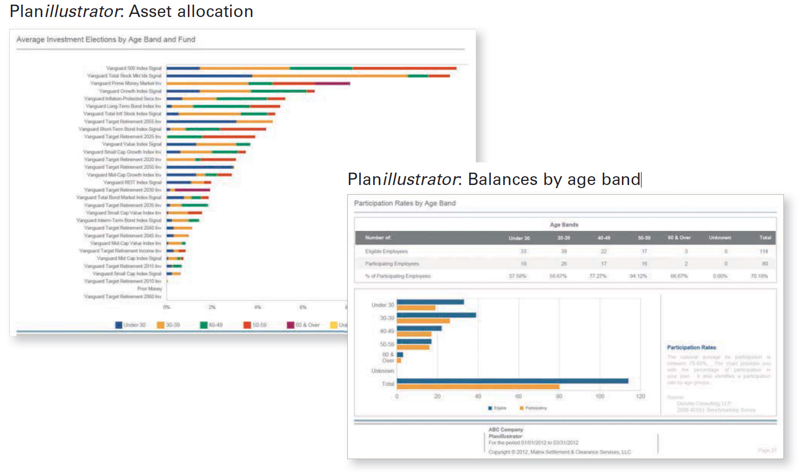

---
---
<div class="vanguard-plan">
  <section class="vanguard-mar-b-more">
    <div class="vanguard-headline-container vanguard-mar-b">
      
      <h2>Fiduciary responsibilities</h2>
    </div>
    <h1>Fulfill your fiduciary duties</h1>
    <p>An employer’s decision to offer a retirement plan is a voluntary one. But if offered, the plan must be operated under the fiduciary and tax rules established by Congress and the regulatory agencies. Vanguard believes your fiduciary responsibility is more than just a checklist.</p>
    <p>You may already be receiving fiduciary support from your financial professional under 3(21) or 3(38) agreements. In addition to those services, you’ll receive:</p>
    <ul>
      <li>Quarterly Plan<em>illustrator</em> reports that provide a broad overview and analysis of your plan’s performance.</li>
      <li>Access to an annual Fiduciary Benchmarks Inc. report for benchmarking fees, plan design, and participant success measures. The report is available after one year of service.</li>
      <li>ERISA consultants who work to keep you informed of regulatory and legislative developments.</li>
    </ul>
    
  </section>
</div>